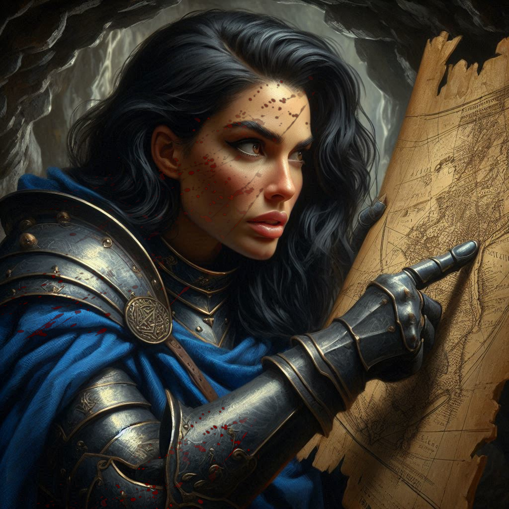
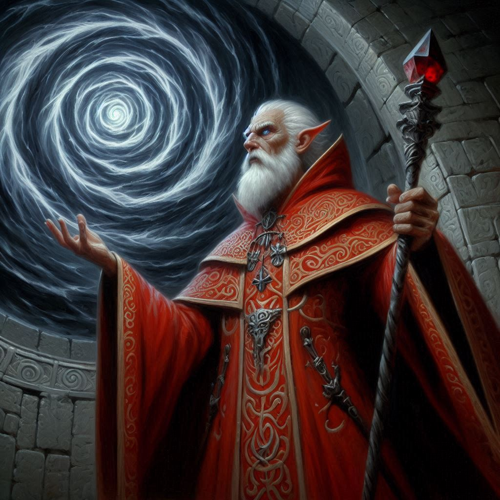

The High Road
You stand at the crossroads, the damp air of Hemlock Caverns thick around you. The narrow tunnels twist and turn, their paths hidden in darkness. Ahead of you, Princess Hawthorn clutches her side, her recent wounds barely healed by Liora’s magic. The sorceress herself leans heavily against the cave wall, her face pale, but determined. You’ve just won a hard-fought battle against Varis’ mercenaries, and though you are weary, the mission isn't over.
"You should go back," you say, eyeing the two women. "You’ve done enough. Rest, heal. We can take it from here."
Hawthorn's brown eyes flash with pride. "Do you think me so fragile? You’ve shown courage, Kira, but you’re going to need all the help you can get." She straightens, though the strain is clear in the lines of her face. "We’re coming with you."
Liora nods silently, her hand glowing faintly with the last vestiges of her power. "My magic is not what it was, but I can still fight." Her voice is soft, but her resolve is unmistakable.
Elias looks at you, uncertain. His hand lingers on the hilt of his sword, his brow furrowed with concern. "Are you sure this is wise, Kira?" he asks, glancing at the two women. “They’re not at full strength.”
You hesitate for a moment, feeling the weight of their decision on your shoulders. But you know the truth: you can’t afford to lose allies now. Varis is close—closer than you’d like to admit—and Jorsh is somewhere in these caverns, his motives still unclear. You need all the help you can get, wounded or not.
"They’re coming with us," you say, your voice firm. "We don’t have time to argue. Let’s move."
You press on, the sound of your footsteps echoing against the stone walls as you delve deeper into the maze-like caverns. The shadows seem to close in around you, the weight of the mountain pressing down. Every breath feels heavier, the air thick with the scent of earth and old magic.
It isn’t long before you come to another fork in the path. Two dark tunnels stretch ahead, one to the left and one to the right. You pause, studying the faint markings on the walls, trying to recall the route from the map Hawthorn had shown you earlier.
"The left is faster," you say, pointing down the darker of the two tunnels.
Hawthorn steps forward, shaking her head. "No," she says, her voice steady but low. "That path is dangerous. It leads to the Scorpion Nests. If you go that way, you won’t make it to the portal chamber alive."
You glance at her, the weight of her words sinking in. Scorpions, especially the giant variety that roam these depths, are not something you want to face, not when your party is already weakened.
"Are you sure?" you ask, reluctant to delay any further.
She gives you a tight nod. "Positive."
With a sigh, you follow her lead, taking the right-hand tunnel instead. The walls seem to close in as you descend, the darkness swallowing the light of your torches. Every sound—every drip of water, every distant rumble—sends a chill down your spine. Your senses are on high alert, the hairs on the back of your neck standing on end.
After what feels like an eternity, the tunnel begins to widen. The air grows colder, and a strange, pulsating light fills the cavern ahead. You creep forward, motioning for the others to stay low. As you reach the edge of the tunnel, you realize you’ve arrived at a high ledge overlooking a massive chamber below.
Your breath catches in your throat. The Chamber of Portals.
Below, the stone floor is etched with ancient runes, glowing with an eerie green light. At the center of the chamber, a massive stone portal stands, its surface swirling with dark energy. Varis is there, his hands raised as he chants in a language you don’t understand, his magic intertwining with the portal’s power. The Minister of Trade—no, the dark elf prince—stands at the center of the chaos, his hood thrown back, revealing the sharp angles of his face, the cruel twist of his lips.
But it’s not just Varis who holds your attention. On the far side of the chamber, hidden in the shadows, stands Jorsh. His hands are glowing with magic, his eyes locked on the portal. You watch as he prepares his own spell, one that crackles with dangerous energy. He’s getting ready to strike.
Your heart pounds. You’re caught between the two men—both enemies, both dangerous—and the fate of the kingdom hangs in the balance.
“We have to stop them,” Elias whispers, his eyes wide with disbelief. “Both of them.”
You nod, but your mind is racing. You could charge in now, take them by surprise, but Varis is surrounded by mercenaries. Jorsh stand in the shadows, preparing some arcane spell which you can only assume is going to invoke some evil that cannot be undone once it is started. Do you target Varis first? Or do you take Jorsh out of the action before he can cause any more trouble?